نصائح وأدلة
تكلفة البناء، رخصة البناء، الهيكل، الكهرباء، الترصيص، التكييف: أدلة عملية من مهندسينا لتحضير مشروعك في المغرب.
لا يوجد مقال مطابق. جرب كلمة أخرى، أو اطرح علينا سؤالك.
من أين تبدأ؟
شراء عقار
كل الموضوع ←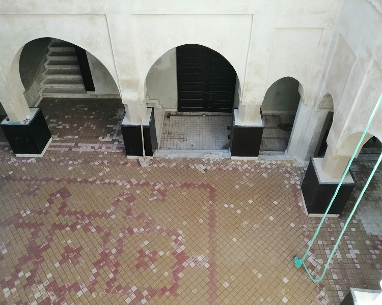
شراء رياض للترميم في مراكش: الفخاخ وميزانية الأشغال
رياض للترميم في المدينة العتيقة حلم جميل، لكن ثمن الشراء ليس سوى جزء من الفاتورة. إليكم ما يجب التحقق منه قبل التوقيع وكيفية تقدير تكلفة الأشغال.
اقرأ المقال ←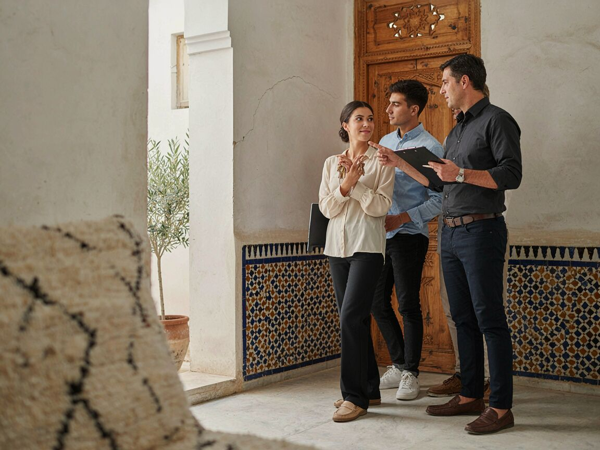
تسلّم شقة جديدة مشتراة في طور الإنجاز (VEFA): كيف تسجلون التحفظات
يوم تسليم المفاتيح، ما لا تسجلونه في المحضر قد يُعتبر مقبولاً. إليكم كيف تستعدون للتسلّم وتحررون تحفظاتكم.
اقرأ المقال ←
شراء أرض للبناء في المغرب: التحققات الواجب القيام بها
الأرض المعلن أنها قابلة للبناء ليست كذلك دائماً، أو ليست كذلك بالنسبة للمشروع الذي تتصورونه. إليكم التحققات القانونية والتعميرية والتقنية الواجب القيام بها قبل التوقيع.
اقرأ المقال ←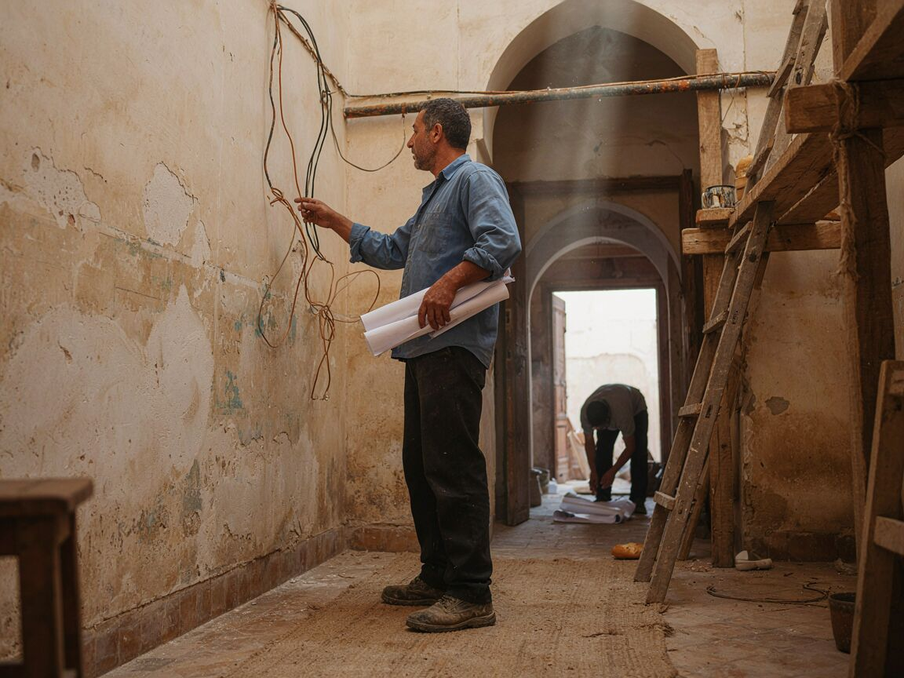
ترميم منزل قديم: من أين نبدأ وبأي ترتيب
تجديد المطبخ قبل السطح يعني المخاطرة بإعادة كل شيء من جديد. إليكم الترتيب المنطقي للترميم، من التشخيص إلى التشطيبات.
اقرأ المقال ←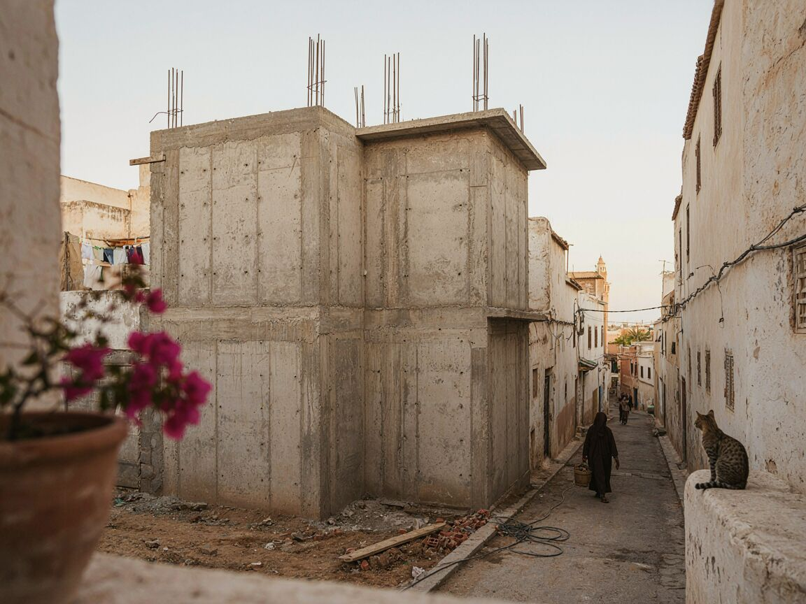
منزل مبني بدون رخصة أو غير مطابق: ما هي المخاطر؟
طابق مضاف، أو توسعة غير مصرح بها، أو منزل بدون رخصة سكن: هذه حالات شائعة. وهي تعرّض المشتري لمخاطر قانونية ومالية، وأحياناً تقنية.
اقرأ المقال ←
الرسم العقاري ومطابقة المنزل: ما يجب التحقق منه
الرسم العقاري السليم لا يقول شيئاً عما تم بناؤه فوق الأرض. للشراء بطمأنينة، يجب التحقق بشكل منفصل من الملكية ومن مطابقة البناء.
اقرأ المقال ←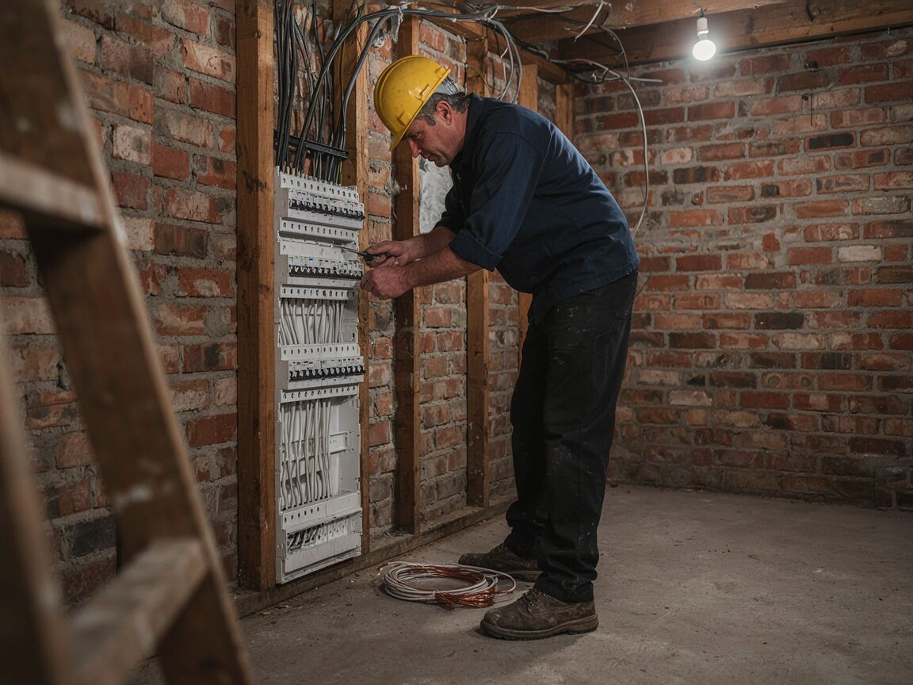
التجديد الكهربائي الكامل لمنزل: المراحل والتكلفة
إعادة كل كهرباء المنزل ورش ثقيل لكنه حاسم بالنسبة للسلامة. إليكم المراحل، وما يحدد الثمن، وكيف تقارنون بين عروض الأسعار.
اقرأ المقال ←الخبرة التقنية قبل الشراء
كل الموضوع ←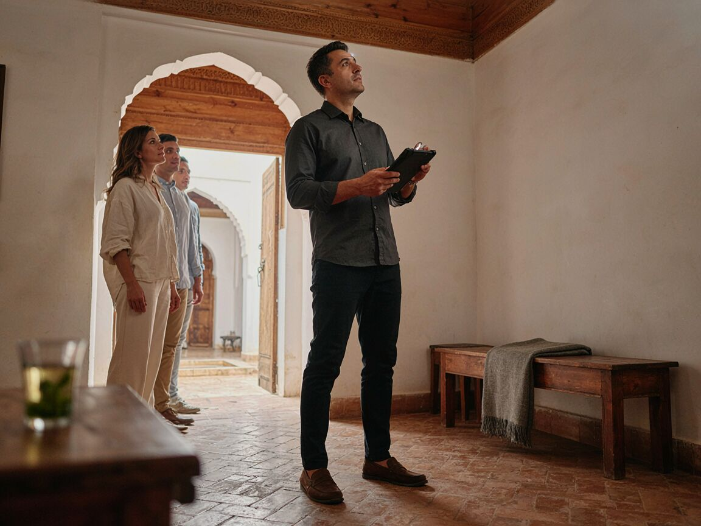
الخبرة التقنية قبل شراء منزل: قائمة المراجعة قسماً بقسم
زيارة مدتها 30 دقيقة لا تكفي للحكم على منزل. إليكم، قسماً بقسم، ما يجب على المشتري فحصه، وما ينبغي أن يثير انتباهه، وما تكلّفه عادةً أعمال الإصلاح.
اقرأ المقال ←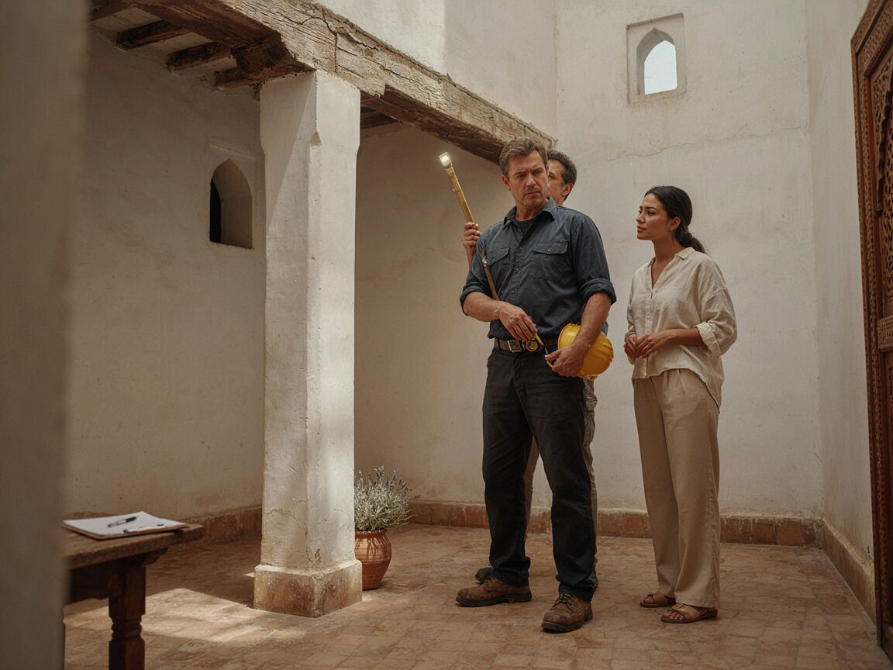
التحقق من هيكل المنزل قبل الشراء: النقاط السبع الأساسية
الهيكل الإنشائي هو القسم الوحيد الذي قد يجعل المنزل غير قابل للبيع أو خطيراً. إليكم ما يجب فحصه ومتى ينبغي الاستعانة بمهندس.
اقرأ المقال ←
التحقق من كهرباء منزل قديم: 8 فحوصات بسيطة
التركيب الكهربائي المتقادم سبب رئيسي للحرائق المنزلية. ثمانية فحوصات تسمح بمعرفة ما إذا كان يكفي تأمينه أو يجب إعادة إنجازه بالكامل.
اقرأ المقال ←
التحقق من السباكة والرطوبة قبل الشراء: الدليل العملي
الماء هو السبب الأول للعيوب في المنزل. بعض الاختبارات البسيطة خلال الزيارة تجنبكم شراء تسرب خفي أو جدار لا يجف أبداً.
اقرأ المقال ←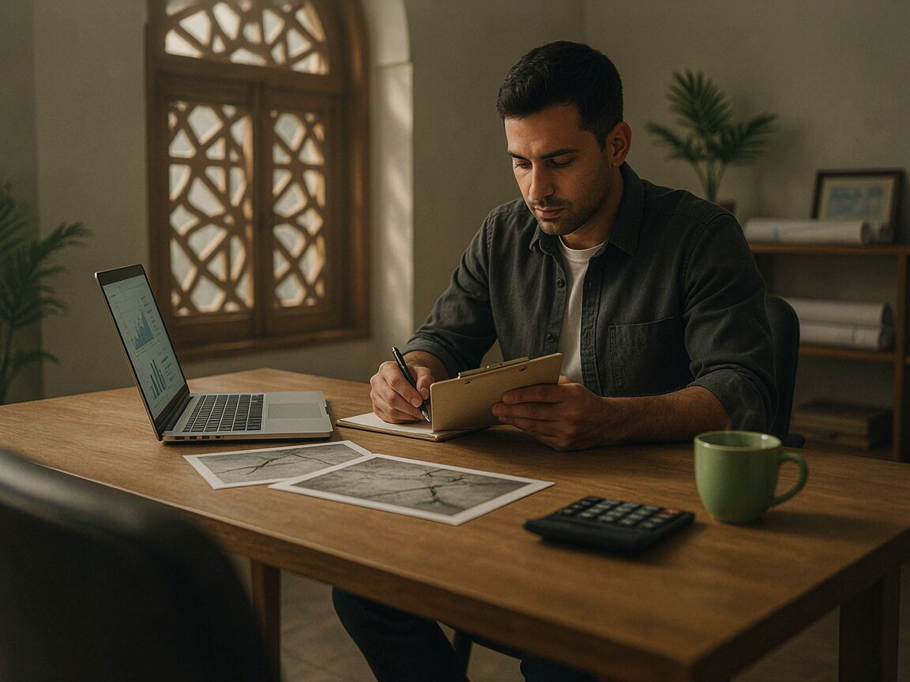
ثمن الخبرة التقنية للمباني في المغرب: الأسعار ومحتوى التقرير
خبرة التقييم، والتشخيص التقني، والخبرة القضائية: هذه الخدمات لا تتشابه لا في المحتوى ولا في الثمن. إليكم كيف تميزون بينها.
اقرأ المقال ←الهيكل والخرسانة المسلحة
كل الموضوع ←
دراسة التربة في المغرب: هل هي إلزامية وكم تكلف؟
ما تكشفه الدراسة الجيوتقنية، ومتى تُنجَز، وكم تكلف بالنسبة لفيلا، ولماذا تُعدّ من أكثر نفقات الورش مردودية.
اقرأ المقال ←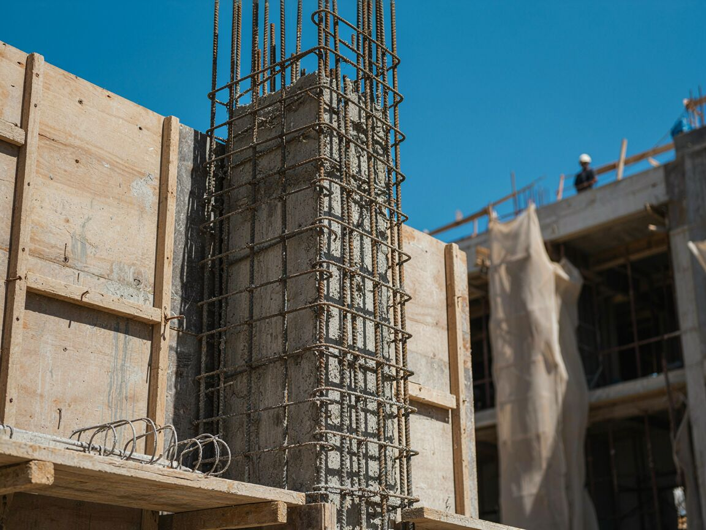
ضابط البناء المضاد للزلازل RPS 2011: ما الذي يغيّره بالنسبة لمنزلك
التقسيم الزلزالي، قواعد التصميم، الأحزمة والتسليح: ما يفرضه ضابط البناء المضاد للزلازل فعليًا على فيلا أو رياض في المغرب.
اقرأ المقال ←
مقادير الخرسانة: الأساسات، البلاطة، الأعمدة وخرسانة النظافة
كم من الإسمنت لكل متر مكعب حسب نوع المنشأة، وكيف يتكوّن متر مكعب من الخرسانة، وأخطاء الورش التي تُفقد الخرسانة مقاومتها.
اقرأ المقال ←
سعر مسبح من الخرسانة في المغرب سنة 2026
السعر للمتر المربع من الحوض، وأمثلة مرقّمة، وما لا تتضمنه عروض الأسعار دائمًا، ولماذا يُحسب حوض الخرسانة المسلحة كهيكل إنشائي.
اقرأ المقال ←
التشققات في المنزل: أسبابها، خطورتها ومتى يجب القلق
كيف تقرأ الشق (العرض، المسار، التطور)، وتميّز بين السطحي والإنشائي، والتصرفات الصحيحة قبل سدّه.
اقرأ المقال ←
إضافة طابق إلى منزلك في المغرب: الجدوى والإجراءات
قبل إضافة طابق: ما يسمح به التعمير، وما يستطيع الهيكل القائم تحمّله، والرخصة، وإمكانيات التدعيم.
اقرأ المقال ←
العزل المائي للسطح في المغرب: الحلول والأسعار للمتر المربع
بيتومين أو سائل أو غشاء PVC: مقارنة حلول العزل المائي وأسعارها للمتر المربع، والتفاصيل التي تمنع التسربات.
اقرأ المقال ←
أي نوع من الأساسات تختار: قواعد منفردة أو لبشة أو خوازيق؟
لا يُختار نوع الأساسات من كتالوج: بل ينتج عن قدرة تحمل التربة، وعمق الطبقة الجيدة، وأحمال مبناكم.
اقرأ المقال ←
أبعاد القاعدة المنفردة أو الشريطية: كيف تُحسب
ينتج حجم القاعدة عن حساب بسيط في مبدئه: الحمل الذي تتلقاه مقسوما على ما تستطيع التربة تحمله. والباقي مسألة تسليح وتفاصيل.
اقرأ المقال ←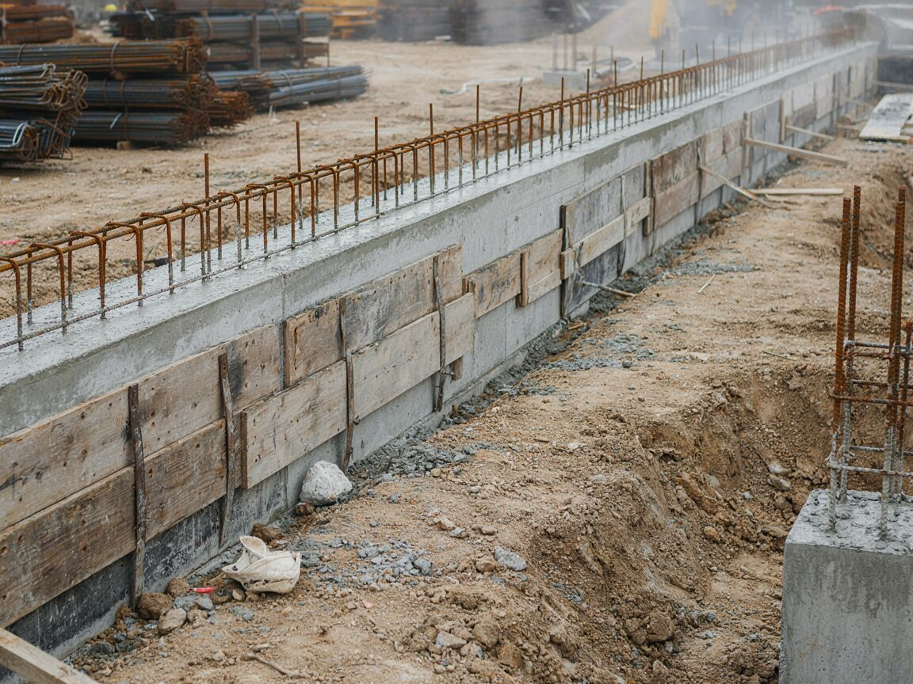
الجسور الأرضية (longrines): ما دورها وكيف تُحدد أبعادها؟
رغم أنها لا تُرى بعد صب البلاط، فإن الجسور الأرضية عنصر أساسي في مقاومة المنزل للزلازل: فهي تمنع الأساسات من التحرك كل واحد على حدة.
اقرأ المقال ←
السلاسل الأفقية والعمودية (chaînages): دورها وقواعدها في المغرب
تطوّق السلاسل الخرسانية جدران البناء وتربطها بالسقوف. وفي منطقة زلزالية مثل منطقة مراكش، فهي تصنع الفرق بين جدار يتشقق وجدار ينهار.
اقرأ المقال ←
المقطع الأدنى لعمود من الخرسانة المسلحة حسب RPS
العمود 20 × 20 سم الذي لا يزال يُرى في بعض الأوراش لا يحترم الضابط المضاد للزلازل. إليكم ما يفرضه RPS وما يبقى للحساب.
اقرأ المقال ←
سقف بالهوردي أو بلاطة مصمتة: أيهما تختار لمنزلكم؟
السقف بالأجسام المجوفة هو الحل الأكثر انتشارا في المغرب للفيلات، لكن البلاطة المصمتة تبقى ضرورية في بعض الحالات. إليكم معايير الحسم.
اقرأ المقال ←
جسر من الخرسانة المسلحة: أي بروز سفلي لأي بحر؟
كثيرا ما يكون البروز السفلي للجسر موضوع نقاش بين المهندس المعماري والزبون والمهندس. إليكم المقادير التقريبية وهوامش المناورة الحقيقية.
اقرأ المقال ←
الغطاء الخرساني لحديد التسليح (enrobage): ما القيم الواجب احترامها؟
الغطاء الخرساني هو سمك الخرسانة بين الحديد والسطح. بضعة مليمترات أقل تكفي لجعل الحديد يصدأ والخرسانة تتشظى في بضع سنوات.
اقرأ المقال ←
مراقبة التسليح قبل الصب: قائمة التحقق في الورش
بعد صب الخرسانة، يكون الأوان قد فات: يصبح التسليح غير مرئي. المراقبة قبل الصب هي اللحظة التي تتحدد فيها المتانة الحقيقية لهيكلكم.
اقرأ المقال ←
معالجة الخرسانة (cure) في الحرارة الشديدة: الممارسات الصحيحة في مراكش
عندما تتجاوز الحرارة 40 °C في مراكش، قد تفقد الخرسانة غير المحمية جزءا مهما من مقاومتها وتمتلئ بالشقوق في بضع ساعات.
اقرأ المقال ←
مدة فك القوالب (décoffrage) للبلاطة والجسر والأعمدة
فك القوالب مبكرا جدا من الأسباب الكلاسيكية للترخيم المفرط والشقوق، بل والانهيار. إليكم المدد الواجب احترامها حسب العنصر والظروف.
اقرأ المقال ←
فتح أو إزالة جدار حامل: المراحل والمخاطر والدراسة
توسيع صالون أو إحداث فتحة كبيرة بإزالة جدار حامل أمر ممكن، شريطة نقل الأحمال بشكل صحيح. إليكم ما يجب معرفته قبل الهدم.
اقرأ المقال ←
فاصل التمدد في المبنى (joint de dilatation): متى وكل كم مترا؟
يتمدد المبنى الخرساني في الحرارة وينكمش في البرد. وبعد طول معين، يجب تقسيمه إلى كتل مستقلة لتجنب الشقوق.
اقرأ المقال ←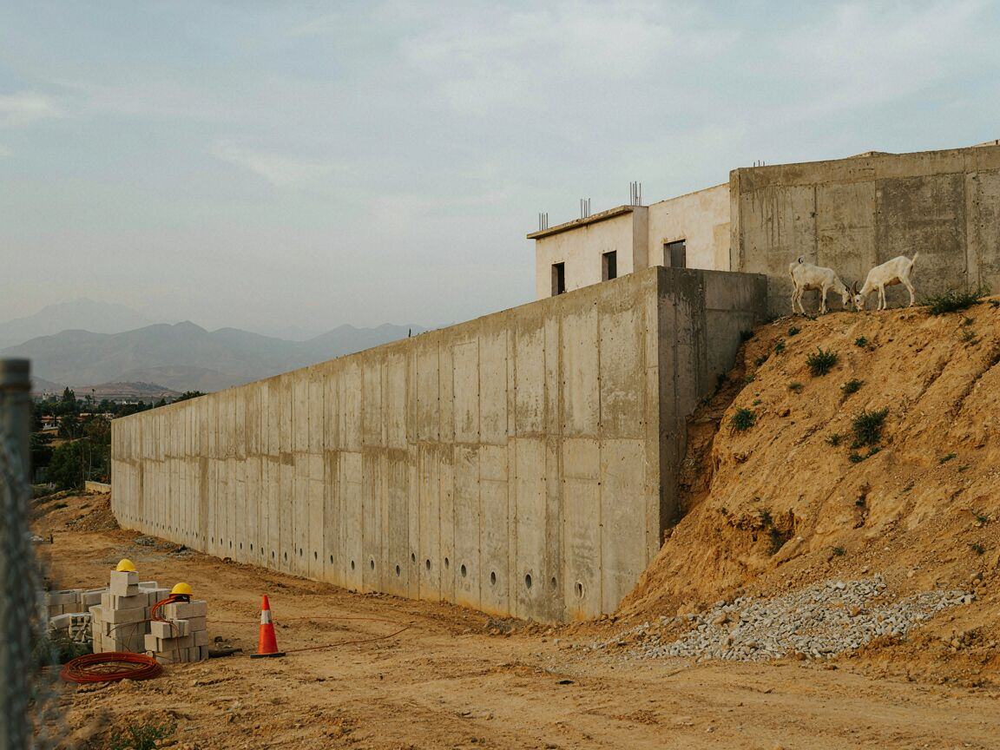
الجدار الاستنادي: الحساب والتصريف والأخطاء الواجب تجنبها
يسند الجدار الاستنادي أطنانا من التراب وكثيرا من الماء. وإذا كان سيئ التصميم أو سيئ التصريف، فإنه ينقلب أو يتشقق: إنه منشأ يجب حسابه.
اقرأ المقال ←
الرطوبة الصاعدة بالخاصية الشعرية في الجدران: الأسباب والعلاجات
رطوبة أسفل الجدار، بقع، أملاح نترات: الرطوبة الصاعدة شائعة في المنازل القديمة والرياضات. كيف نتعرف عليها ونعالجها بشكل دائم.
اقرأ المقال ←
حديد HA FeE500: الأقطار والمقاطع والوزن للمتر
لقراءة مخطط تسليح، أو تقدير طلبية حديد، أو التحقق من فاتورة، يجب معرفة مقطع كل قطر من القضبان ووزنه للمتر.
اقرأ المقال ←
أصناف الخرسانة B25 وC25/30 وC30/37: ماذا تعني؟
في المخططات ودفاتر التحملات، تُعيَّن الخرسانة بصنف مقاومة. ومعرفة قراءته تسمح بطلب الخرسانة المناسبة والتحقق مما يُسلَّم.
اقرأ المقال ←
تدعيم الأساسات (reprise en sous-œuvre): متى وكيف؟
تقوية أو تعميق أساسات مبنى قائم دون هدمه أمر ممكن. إنها عملية دقيقة، تُصمَّم وتُراقب بعناية.
اقرأ المقال ←
الطابق تحت الأرضي: العزل المائي (cuvelage) وتسربات الماء
الطابق تحت الأرضي الذي يتسرب إليه الماء من أكثر العيوب كلفة في الإصلاح. وتُقرَّر الحماية منذ التصميم، حسب الماء الموجود في التربة.
اقرأ المقال ←الكهرباء
كل الموضوع ←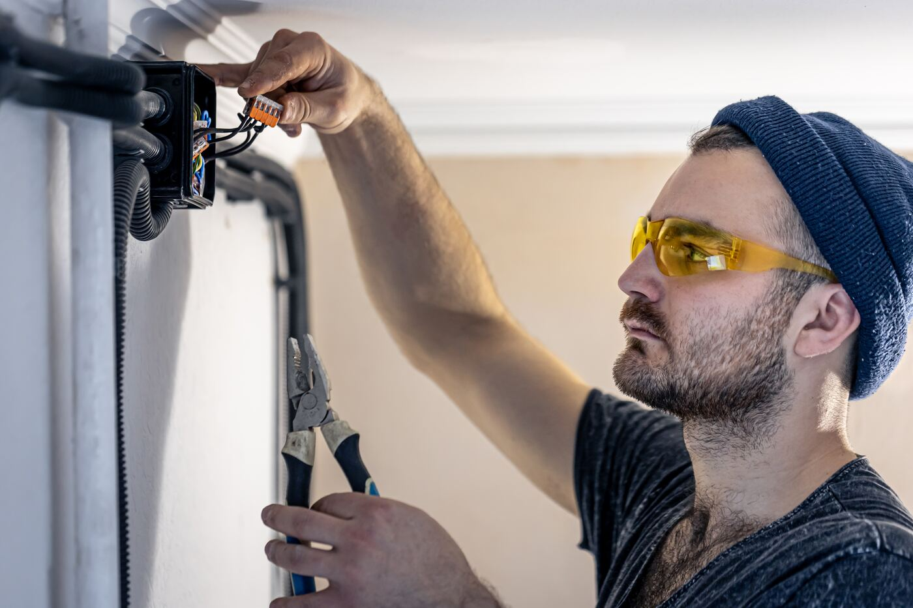
كم مقبسا على نفس الدارة الكهربائية؟ قواعد معيار NF C 15-100
يتوقف عدد المقابس المسموح به على دارة واحدة على مقطع الأسلاك وعيار القاطع. إليكم المرجعيات التي يحددها معيار NF C 15-100، المرجع المعتمد لدى مكاتب الدراسات في المغرب.
اقرأ المقال ←
الدارات المخصصة الإلزامية: الفرن، آلة الغسيل، المكيف…
بعض الأجهزة يجب أن يكون لها خط خاص بها انطلاقا من اللوحة. ما هي، وبأي مقطع وأي قاطع، وما الذي ينبغي توقعه لفيلا مكيفة في مراكش.
اقرأ المقال ←
الفرن وصفيحة الطهي: أي كابل وأي قاطع؟
يتركز في المطبخ أقوى أجهزة المنزل. إليكم المقاطع المعتادة للكابلات وعيارات القواطع للفرن والصفيحة، والأخطاء الشائعة في الورش.
اقرأ المقال ←
القاطع أو المفتاح التفاضلي: ما الفرق بينهما؟
ثلاثة أجهزة بأسماء متقاربة، وثلاثة أدوار مختلفة في اللوحة الكهربائية. فهم الفرق يتيح قراءة عرض الأسعار ومعرفة سبب « فصل » جهاز ما.
اقرأ المقال ←
تفاضلي 30 mA من النوع AC أو A أو F: أيها لأي دارة؟
ليست كل المفاتيح التفاضلية 30 mA تكشف التسربات نفسها. فالنوع المناسب يتوقف على الأجهزة الموصولة، والمسألة مهمة في فيلا مغربية مجهزة بكثافة بالتكييف.
اقرأ المقال ←
كم مفتاحا تفاضليا حسب مساحة المسكن؟
يتوقف عدد المفاتيح التفاضلية على مساحة المسكن وعدد الدارات. إليكم الجدول المرجعي وطريقة توزيع الدارات في فيلا.
اقرأ المقال ←مقطع الكابل وعيار القاطع: الجدول المرجعي
يُختار عيار القاطع حسب مقطع الكابل الذي يحميه. إليكم الجدول المعتاد للتركيبات المنزلية، والحالات التي يلزم فيها تجاوز ما يقدمه الجدول.
اقرأ المقال ←
التأريض في المنزل: الوتد، الحلقة في قاع الحفر، المقاومة
يُصرّف مأخذ الأرض تيارات العطل ويتيح للتفاضليات أداء دورها. وأفضل حل يُقرَّر في مرحلة الأساسات.
اقرأ المقال ←
الربط متساوي الجهد الرئيسي (LEP): الدور والإنجاز
يضع الربط متساوي الجهد الرئيسي جميع الكتل المعدنية الداخلة إلى البناية على الجهد نفسه. سلك متوار، لكنه لا غنى عنه للسلامة.
اقرأ المقال ←
الربط متساوي الجهد الإضافي (LES) في الحمام
في الحمام، يجعل الماء والجسم المبلل الصدمة الكهربائية أخطر بكثير. والربط متساوي الجهد الإضافي يضع كل ما هو معدني في الغرفة على الجهد نفسه.
اقرأ المقال ←
الأحجام 0 و1 و2 في الحمام: ما الذي يمكن تركيبه؟
يقسم معيار NF C 15-100 الحمام إلى أحجام حول حوض الاستحمام والدش. وكلما اقتربنا من الماء، صارت القواعد أكثر صرامة.
اقرأ المقال ←
اللوحة الكهربائية وGTL: الموضع، عدد الصفوف، الاحتياطي
تجمع اللوحة الكهربائية والغلاف التقني للمسكن (GTL) مدخل الطاقة وأجهزة الحماية. ويُقرَّر موضعهما وحجمهما على التصميم، لا في الورش.
اقرأ المقال ←
العدد الأدنى للمقابس ونقاط الإنارة في كل غرفة (NF C 15-100)
يحدد المعيار حدا أدنى من المقابس ونقاط الإنارة لكل غرفة. وهي حدود دنيا، لا أهداف: ففي الفيلا، يُتوقع دائما تقريبا أكثر من ذلك.
اقرأ المقال ←
كهرباء المطبخ: المآخذ والدارات والارتفاعات حسب المعيار
المطبخ هو أكثر غرف المنزل حملًا كهربائيًا. إليكم عدد المآخذ، والدارات الواجب توقعها، والمواضع التي يجب تجنبها، وفق مرجعيات NF C 15-100.
اقرأ المقال ←
مانع الصواعق (parafoudre): متى يكون مفيدًا أو إلزاميًا للمنزل؟
قد تكفي عاصفة رعدية على بعد عدة كيلومترات لإتلاف جهاز الإنترنت أو مركز الإنذار أو البطاقة الإلكترونية لمكيّف. يحدّ مانع الصواعق من هذه الارتفاعات المفاجئة في الجهد؛ إليكم متى يكون مطلوبًا ومتى يكون مجرد خيار معقول.
اقرأ المقال ←
أحادي الطور أم ثلاثي الطور لفيلا في المغرب: كيف تختار
يتم الاختيار بين الأحادي الطور والثلاثي الطور عند تقديم طلب الربط لدى الموزع. ويتوقف على القدرة الإجمالية للفيلا وعلى بعض التجهيزات الكبيرة.
اقرأ المقال ←
حصيلة القدرة لفيلا: ما قدرة العداد التي يجب طلبها
جمع قدرات جميع الأجهزة يعطي رقمًا مرتفعًا جدًا: فهي لا تعمل كلها في الوقت نفسه أبدًا. تُستعمل حصيلة القدرة لطلب الربط المناسب، لا أضعف من اللازم ولا مبالغًا في حجمه.
اقرأ المقال ←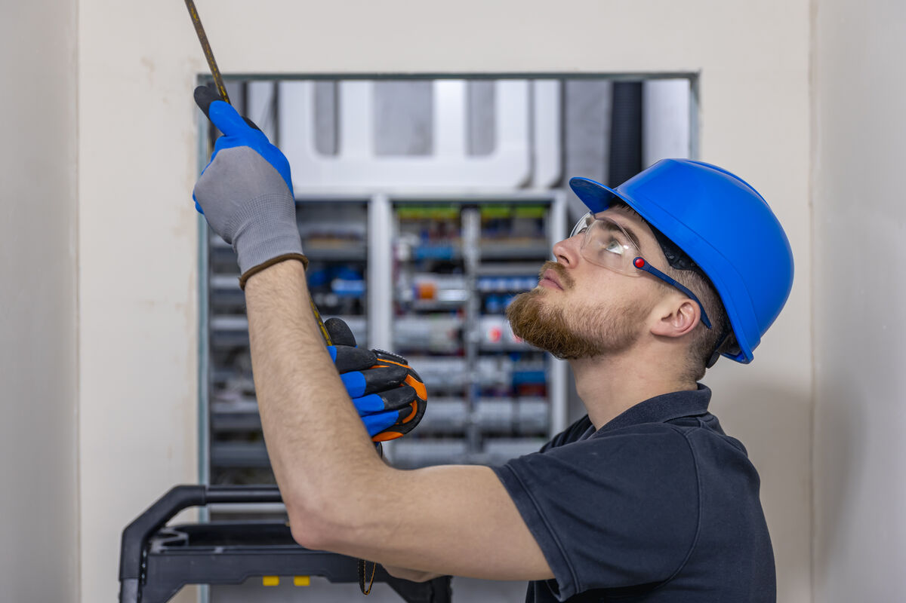
هبوط الجهد وطول الكابل: الحساب والقواعد الواجب احترامها
كلما كان الكابل أطول وأرفع، انخفض الجهد في نهايته. وفي فيلا بحديقة أو ملحق مسبح (pool house) أو بوابة بعيدة، غالبًا ما يكون الطول، لا عيار القاطع، هو ما يفرض مقطع الكابل.
اقرأ المقال ←
كهرباء المسبح: الأحجام، الجهد المنخفض جدًا الآمن 12 V وعلبة الترشيح
يجمع المسبح بين الماء وجسم الإنسان والكهرباء: إنه التركيب الأخطر. وتقوم القواعد على أحجام حول الحوض، كما في الحمّام، لكن بمسافات أكبر.
اقرأ المقال ←
محطة شحن السيارة الكهربائية في المنزل بالمغرب: القدرة والكابل والثمن
شحن سيارة كهربائية على مأخذ عادي بطيء ويُجهد دارة غير مصممة لذلك. والمحطة الجدارية (wallbox) على دارة مخصصة هي الحل المعتاد في المنزل.
اقرأ المقال ←
الألواح الشمسية للاستهلاك الذاتي: ما الذي يغيّره القانون 82-21
منذ دخول المرسوم التطبيقي للقانون 82-21 حيز التنفيذ، أصبح بإمكان الفرد ربط ألواحه الشمسية بالشبكة في إطار محدد. إليكم القواعد، والإجراءات، وطريقة تحديد أبعاد منشأة مربحة.
اقرأ المقال ←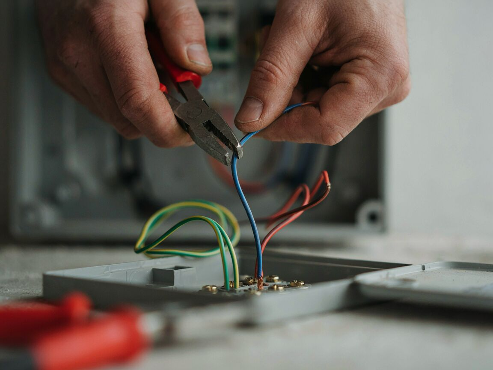
ألوان الأسلاك الكهربائية: الطور والمحايد والأرضي حسب المعيار
ألوان الموصلات ليست للزينة: فهي تتيح لأي كهربائي التعرف فورًا على المحايد والأرضي والأطوار. إليكم الرمز الواجب احترامه وحدوده.
اقرأ المقال ←
القاطع أو القاطع التفاضلي الذي ينفصل: الأسباب والتشخيص
القاطع الذي ينفصل ليس عطلًا: إنه حماية تؤدي عملها. لكن يجب معرفة أي قاطع فصل، ولماذا، قبل إعادة تشغيله.
اقرأ المقال ←
ثمن التركيب الكهربائي لفيلا في المغرب: مرجعيات 2026
قد تتفاوت عروض أسعار الكهرباء لفيلا واحدة من الضعف إلى ثلاثة أضعاف. والفرق يأتي دائمًا تقريبًا من النطاق: عدد النقاط، جودة المعدات، التيارات الضعيفة، المساحات الخارجية. إليكم كيف تُقرأ الأسعار.
اقرأ المقال ←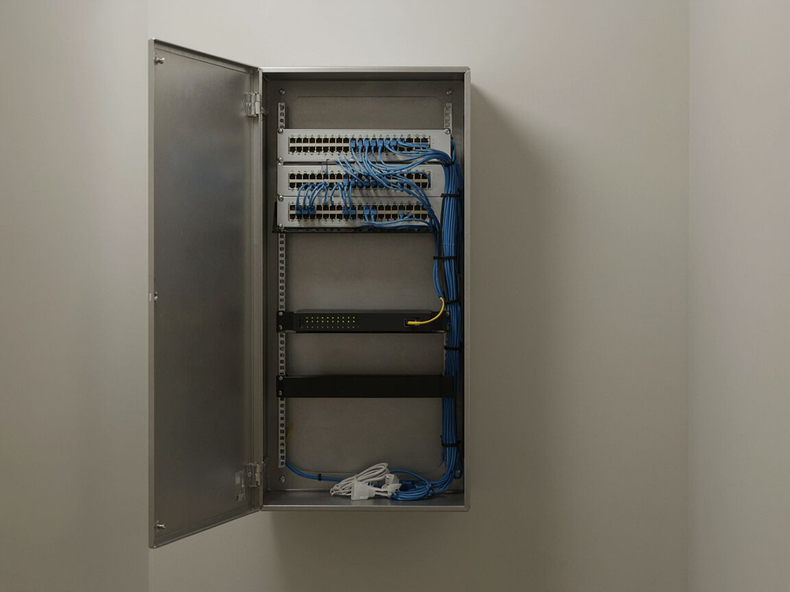
التيارات الضعيفة في الفيلا: RJ45، علبة الاتصالات، الألياف البصرية
Wi-Fi لا يعوّض الكابل. ففي فيلا من الخرسانة المسلحة، بعدة طوابق وجدران سميكة، تتفادى شبكة RJ45 مدروسة جيدًا منذ الأشغال الكبرى سنوات من الاتصال غير المستقر.
اقرأ المقال ←
مولّد كهربائي لفيلا: القدرة، مبدّل المصدر، الثمن
بالنسبة لفيلا معزولة، أو موقع في نهاية الخط، أو دار ضيافة لا تحتمل انقطاعًا، يُعدّ المولّد الكهربائي ضمانًا. لكنه إذا رُبط بشكل سيئ يصبح خطيرًا عليكم وعلى أعوان الشبكة.
اقرأ المقال ←
التركيب الكهربائي لفيلا: معيار NF C 15-100 وقواعده الأساسية
لماذا يُعدّ معيار NF C 15-100 مرجعًا في الدراسات الكهربائية بالمغرب، وما الذي تغيّر مع إصدار 2024، والنقاط التي يجب التحقق منها في مشروعك.
اقرأ المقال ←الترصيص الصحي
كل الموضوع ←
قطر أنابيب السباكة (plomberie) في المنزل: التغذية والصرف
الأنبوب الصغير جدا يعطي خيطا رفيعا من الماء في الدوش أو مغسلة تُفرغ ببطء. إليكم الأقطار الشائعة، جهازا بجهاز، وما الذي يحددها.
اقرأ المقال ←
PER أو multicouche أو النحاس أو PPR: أي أنبوب سباكة تختار؟
أربع عائلات من الأنابيب تتقاسم أوراش البناء المغربية. لا واحدة منها سيئة، لكن لكل منها قواعد تركيب وفخاخ خاصة بها.
اقرأ المقال ←
ميل صرف المياه العادمة: 1 سم لكل متر كحد أدنى
قناة صرف تنسد كل ستة أشهر يرجع سببها دائما تقريبا إلى ميل سيئ الضبط. القواعد بسيطة، لكن يجب التحقق منها قبل صب البلاطة.
اقرأ المقال ←
التهوية الأولية لأنابيب الصرف العمودية: لماذا تصعد الروائح الكريهة
روائح كريهة في الحمام دون تسرب ظاهر؟ المتسبب غالبا عمود صرف لا يتنفس.
اقرأ المقال ←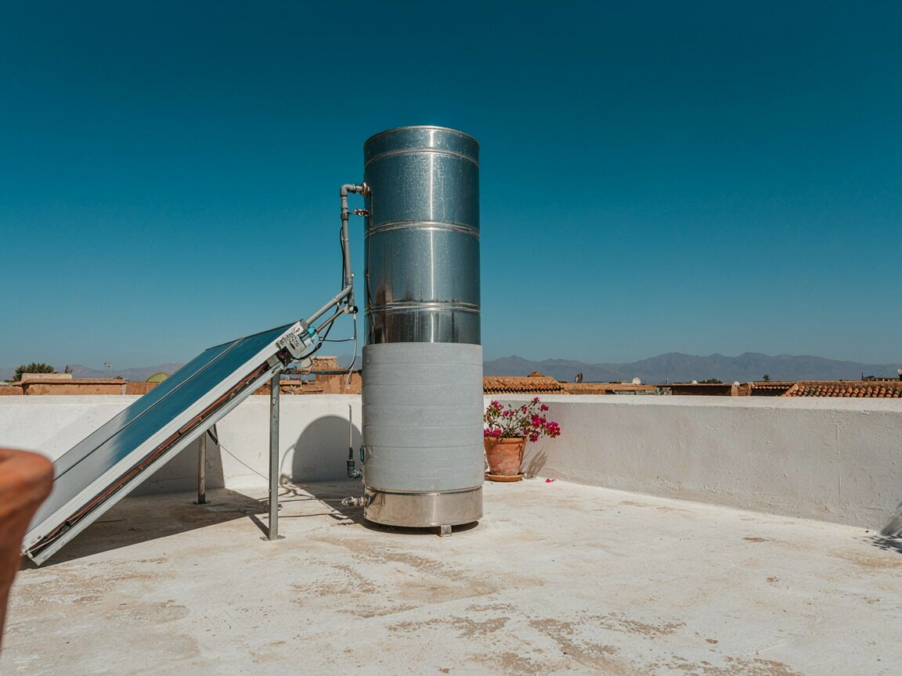
سخان الماء الشمسي (chauffe-eau solaire) في المغرب: أي سعة تختار؟
مع أشعة الشمس الوفيرة في المغرب، يكاد يكون سخان الماء الشمسي دائما استثمارا جيدا. لكن يجب تحديد أبعاده وتركيبه بشكل صحيح.
اقرأ المقال ←
مضخة رفع الضغط (surpresseur) وضعف ضغط الماء: الأسباب والحلول
دوش بلا صبيب في الطابق العلوي، وسخان ماء بالكاد يسيل: قبل شراء مضخة، يجب فهم مصدر ضعف الضغط.
اقرأ المقال ←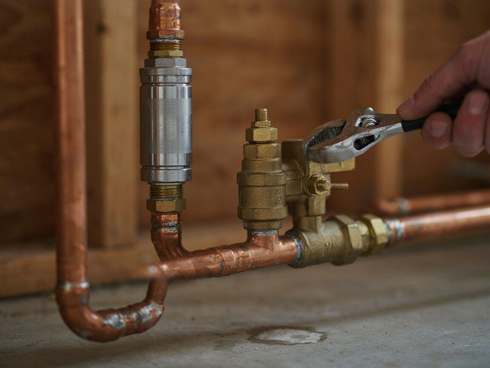
المطرقة المائية (coup de bélier) في الأنابيب: الأسباب والحلول الفعالة
«طَق» داخل الجدران عندما تتوقف غسالة الملابس أو عند إغلاق خلاط: ليس مجرد صوت، بل ضغط زائد يُنهك المنشأة بأكملها.
اقرأ المقال ←
الحفرة الصحية (fosse septique) في المغرب: تحديد الأبعاد والتركيب والصيانة
خارج المناطق المربوطة بشبكة المجاري، يجب على الفيلا أو الضيعة معالجة مياهها العادمة بنفسها. حفرة بأبعاد صحيحة وصيانة جيدة تجنّب الروائح والفيضان وتلوث البئر.
اقرأ المقال ←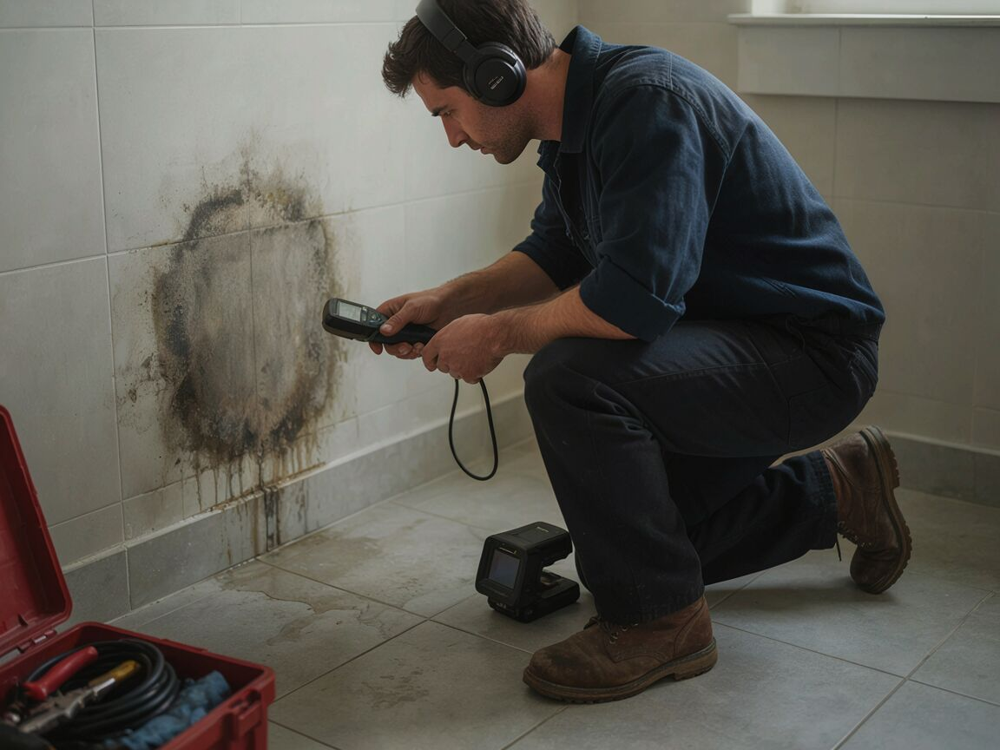
كشف تسرب الماء الخفي: طرق بسيطة وتقنيات متقدمة
تسرب غير مرئي قد يرفع الفاتورة ويتلف بلاطة لعدة أشهر. بعض الاختبارات البسيطة تسمح بتأكيده، ثم تحدد طرق غير مُتلِفة موقعه.
اقرأ المقال ←
الكلس وجهاز تحلية الماء (adoucisseur) في مراكش: هل يجب معالجة الماء؟
آثار بيضاء على الصنابير، سخان ماء يسخن بشكل أقل، رؤوس دوش مسدودة: الكلس مكلف. قبل شراء جهاز تحلية، قيسوا عسر الماء لديكم.
اقرأ المقال ←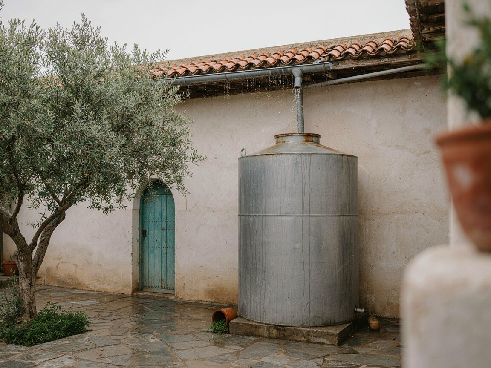
استرجاع مياه الأمطار في المغرب: هل هو مربح؟
في مراكش، تمطر قليلا وبشكل غير منتظم. ويبقى استرجاع مياه الأمطار مفيدا للسقي، بشرط تحديد سعة الخزان بواقعية.
اقرأ المقال ←
الدوش الإيطالي (douche à l'italienne): الميل والسيفون والعزل المائي
أصبح الدوش المستوي مع الأرض هو القاعدة في الفيلات والرياضات. وهو أيضا من الأسباب الأولى لأضرار المياه عندما يكون تصميمه سيئا.
اقرأ المقال ←
خزان الماء والصهريج (citerne) للمنزل: الحجم والتركيب
انقطاعات الماء، ضغط ضعيف في الصيف، فيلا في الضواحي: كثير من المنازل في المغرب تتوفر على احتياطي ماء. إذا كانت أبعاده وتركيبه صحيحة، فهو مفيد؛ وإذا رُكِّب بشكل سيئ، فإنه يُثقل البلاطة ويُفسد الماء.
اقرأ المقال ←
سعر سباكة فيلا في المغرب: البنود والميزانية
حصة السباكة والأدوات الصحية أقل وزنا من الأشغال الكبرى (gros œuvre)، لكنها تتركز فيها عيوب تنفيذ كثيرة. إليكم كيف يتوزع سعرها وكيف تقارنون عروض الأسعار.
اقرأ المقال ←التكييف والتهوية
كل الموضوع ←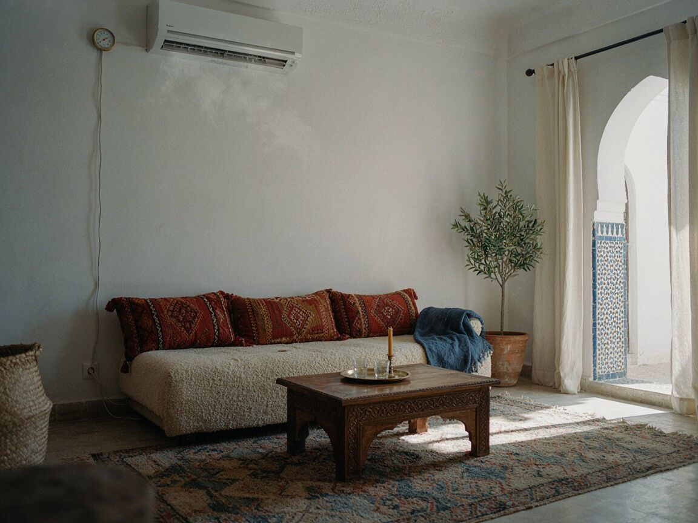
التكييف: ما القدرة (BTU) المناسبة حسب مساحة الغرفة؟
جدول القدرات حسب المساحة، والعوامل التي تغيّر كل شيء في مناخ مراكش، ومتى يصبح الحساب الحقيقي ضروريًا.
اقرأ المقال ←
سبليت أو مكيف مخفي بالقنوات أو VRV: أي تكييف تختار في المغرب؟
تتقاسم ثلاث عائلات كبرى من أنظمة التكييف الفيلات والمباني في المغرب. ويتوقف الاختيار الصحيح على عدد الغرف والمساحة المتاحة والميزانية، وليس على سعر الجهاز وحده.
اقرأ المقال ←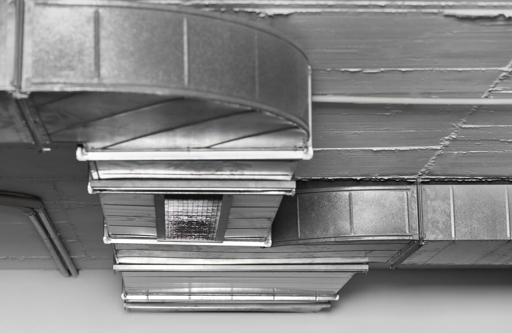
التهوية الميكانيكية أحادية أو مزدوجة التدفق: أيها تختار في المغرب؟
تجدد التهوية الميكانيكية الهواء وتطرد الرطوبة والروائح. وتسترجع التهوية مزدوجة التدفق فوق ذلك طاقة الهواء المستخرج، لكنها ليست مبررة في كل مكان.
اقرأ المقال ←
تدفئة منزل في مراكش: مضخة حرارية أو مكيف عكسي أو أرضية مُدفِّئة؟
كثيرا ما ننسى ذلك في الصيف، لكن منازل مراكش باردة في الشتاء. ويتوقف نظام التدفئة المناسب على العزل والمساحة وما هو مبرمج أصلا للتكييف.
اقرأ المقال ←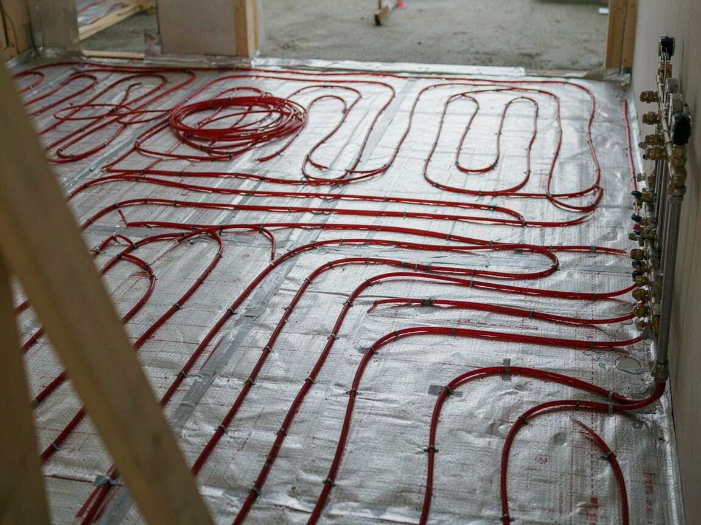
الأرضية المدفئة والمبرِّدة: طريقة العمل والحدود
توفر الأرضية المدفئة أكثر أنواع التدفئة راحة على الإطلاق. وفي وضع التبريد، تؤدي خدمة في الصيف، لكنها لا تعوّض التكييف في مناخ مراكش.
اقرأ المقال ←صيانة المكيف: كم مرة وماذا يجب أن نفحص؟
المكيف الذي لا يُصان جيدا يستهلك أكثر ويبرّد أقل وقد ينشر روائح أو عفنا. وتكفي بضع حركات بسيطة وزيارة سنوية في معظم المنازل.
اقرأ المقال ←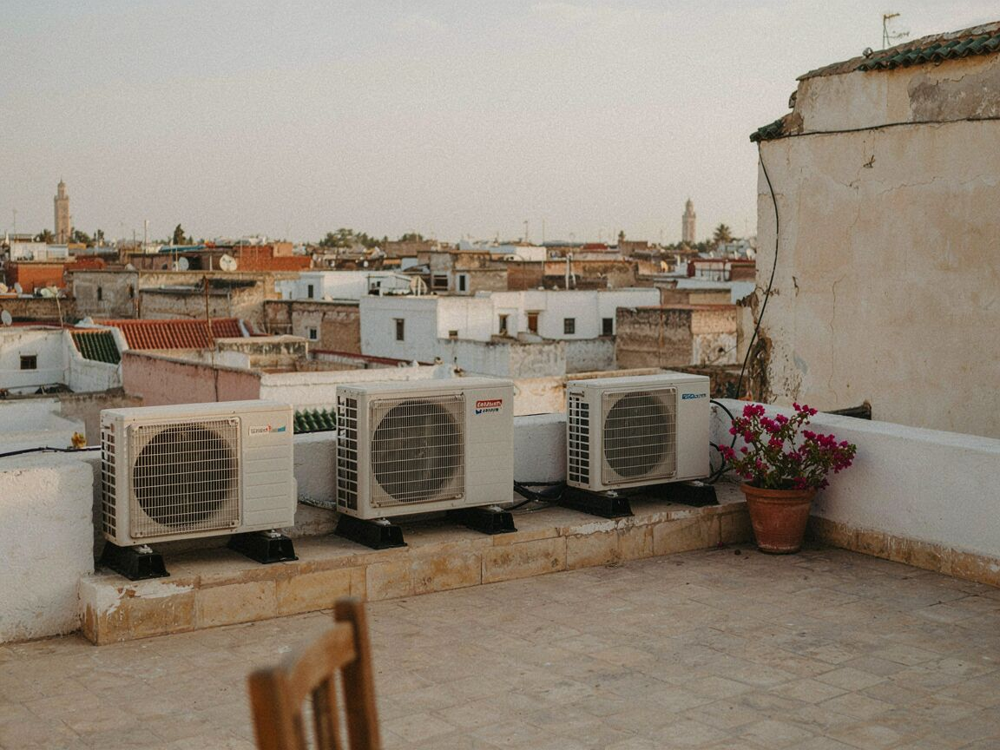
ضجيج الوحدة الخارجية للمكيف: أين تركّبها دون إزعاج؟
ضجيج الوحدات الخارجية من أول أسباب نزاعات الجوار المرتبطة بالتكييف. والموضع الجيد، المختار منذ التصاميم، يحل جوهر المشكلة.
اقرأ المقال ←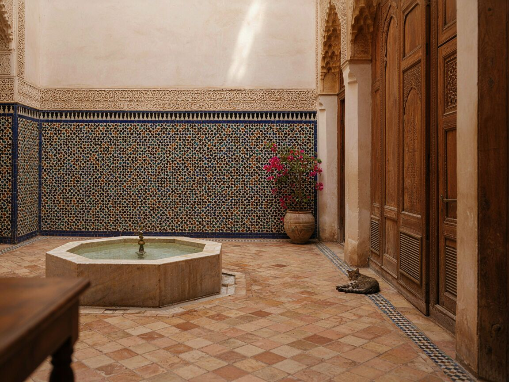
تكييف رياض بفناء: الحلول والأخطاء التي يجب تجنبها
الرياض ليس فيلا: فناء مفتوح على السماء، جدران سميكة، زخارف يجب الحفاظ عليها وجيران قريبون جدا. ويُصمَّم تكييفه غرفة بغرفة، مع احترام البناء القائم.
اقرأ المقال ←
تصريف مياه تكاثف المكيف: الميل والسيفون والمضخة
ينتج المكيف الماء وهو يبرّد الهواء. وإذا لم يُصرَّف جيدا، فإنه يلطّخ الجدران ويتلف الأسقف ويُطلق روائح أو يسيل عند الجار.
اقرأ المقال ←
سعر تكييف فيلا في المغرب: الأرقام التقريبية
يتراوح سعر تكييف فيلا من الضعف إلى خمسة أضعاف حسب النظام وعدد الغرف وجودة التركيب. إليكم الأرقام التقريبية للمعدات وما يجب أن يتضمنه عرض الأسعار.
اقرأ المقال ←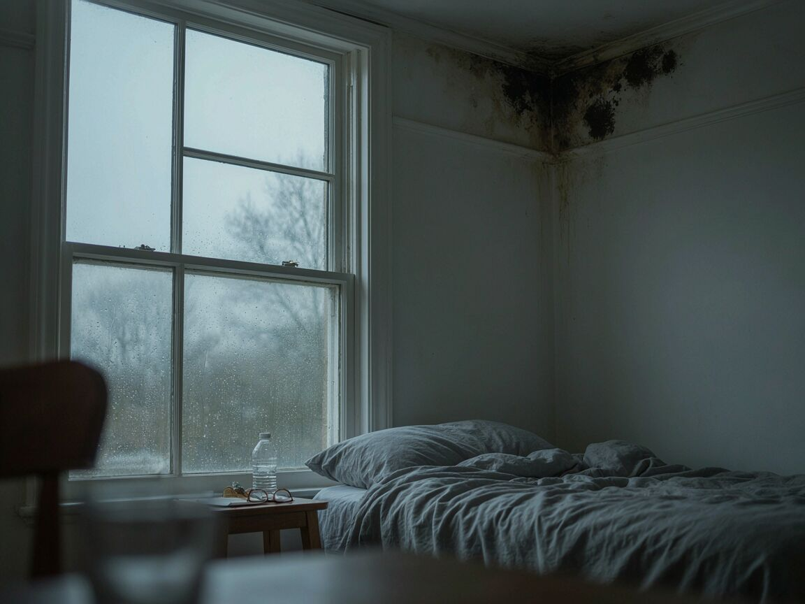
الرطوبة والتكاثف والعفن في المنزل: الأسباب والحلول
بقع سوداء في الزوايا، ضباب على الزجاج، رائحة عفن: قبل إعادة الصباغة، يجب معرفة مصدر الماء. فالتكاثف ليس إلا أحد الأسباب الممكنة.
اقرأ المقال ←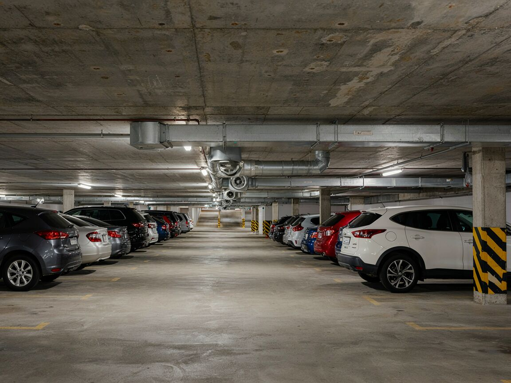
تهوية مرأب العمارة وطرد الدخان منه: المبادئ الأساسية
يجب أن يُهوّى المرأب المغطى يوميا لطرد غازات العادم، وأن يُطرد منه الدخان عند الحريق للسماح بالإخلاء وتدخل فرق الإنقاذ.
اقرأ المقال ←
شفاط واستخراج هواء المطبخ المهني: القواعد الواجب اتباعها
ينتج المطبخ المهني الحرارة والبخار والدخان والدهون. والاستخراج الجيد التصميم يحمي العاملين والجيران والمبنى من الحريق.
اقرأ المقال ←العزل الحراري والطاقة
كل الموضوع ←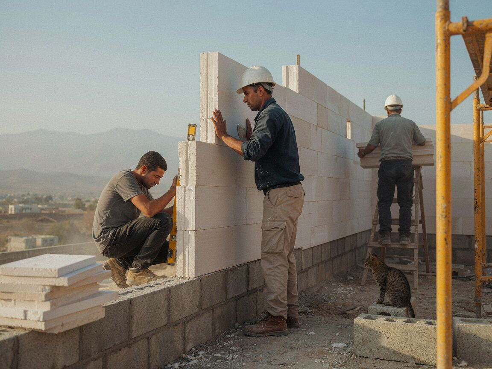
العزل الحراري لمنزل في المغرب: ما يشترطه RTCM
شرح مبسّط للضابط الحراري المغربي: المناطق المناخية، والجدران التي يجب عزلها أولًا، وما يغيّره ذلك بالنسبة للراحة وفاتورة التكييف.
اقرأ المقال ←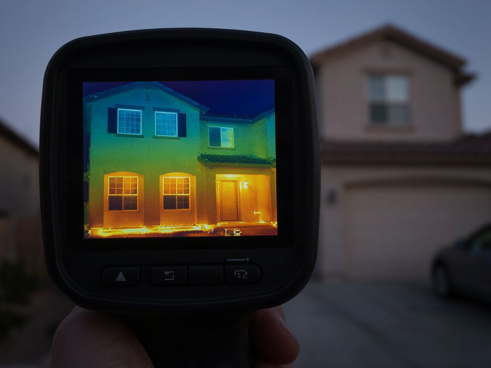
الجسور الحرارية في المنزل: أين توجد وكيف تُعالج
عزل الجدران دون معالجة الأعمدة وأطراف البلاطات يعني ترك مشعّات من الخرسانة داخل الغلاف. أين توجد الجسور الحرارية وكيف نحد منها.
اقرأ المقال ←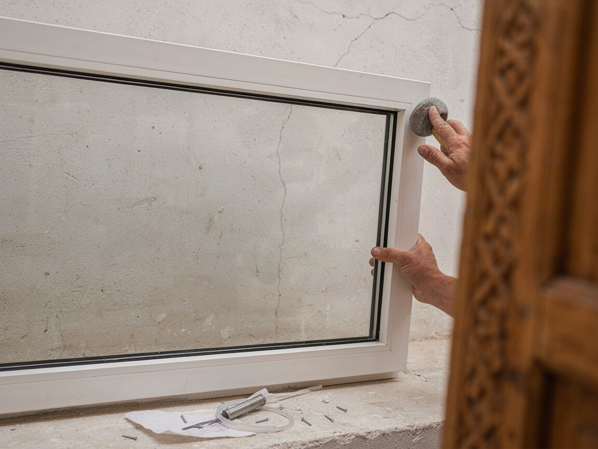
الزجاج المزدوج ضد الحرارة في المغرب: ما المهم فعلاً
ضد الحرارة، لا يكفي زجاج مزدوج عادي: فالمعامل الشمسي والحماية الخارجية هما أساساً ما يصنع الفرق.
اقرأ المقال ←
توجيه المنزل في مناخ حار: القواعد الخاصة بمراكش
قبل أي عزل أو تكييف، فإن طريقة وضع المنزل على الأرض تحدد جزءاً كبيراً من راحته في الصيف.
اقرأ المقال ←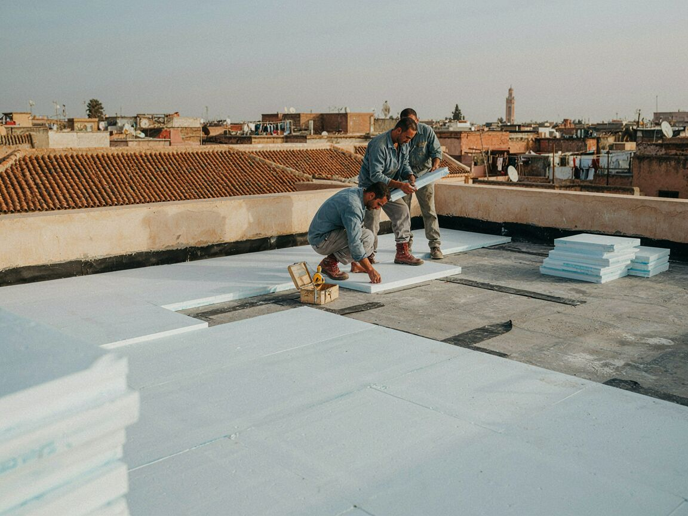
أي عازل لسطح المنزل (toiture-terrasse) في المغرب؟ مقارنة
السطح هو الجدار الذي يتلقى أكبر قدر من الشمس. واختيار العازل المناسب، وتركيبه في المكان الصحيح بالنسبة للعزل المائي، يغير راحة الطابق الأخير.
اقرأ المقال ←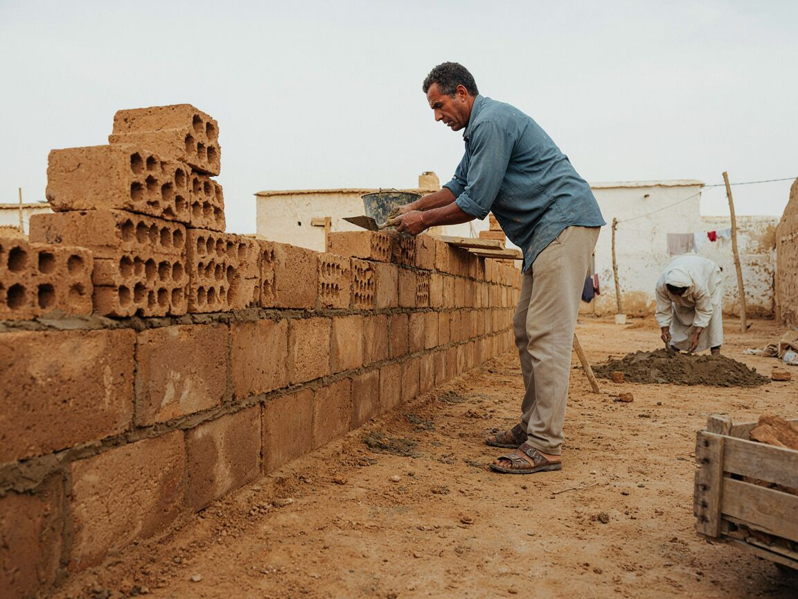
الآجر العازل، الجدار المزدوج أو الأحادي (monomur): أي جدار في المغرب؟
الآجر المجوف وحده قليل العزل. إليكم كيف تختارون تركيبة جدار تحمي فعلاً من الحرارة، دون المساس بالهيكل المضاد للزلازل.
اقرأ المقال ←
الحمايات الشمسية: كاسرات الشمس، المظلات، المصاريع، المشربية
إيقاف الشمس قبل أن تلمس الزجاج هو الإجراء الأكثر فعالية ضد الارتفاع المفرط للحرارة. والوسيلة المناسبة تتوقف على اتجاه الواجهة.
اقرأ المقال ←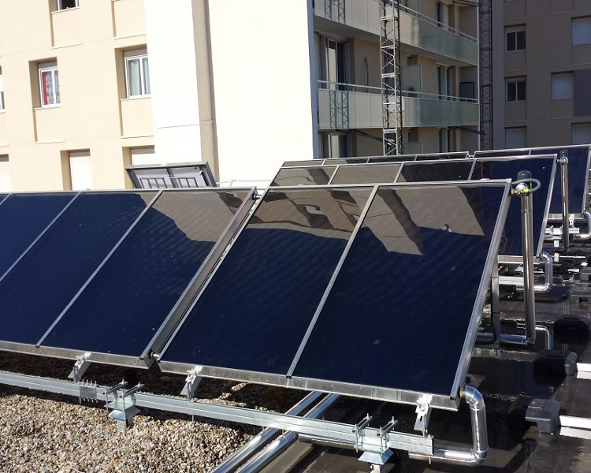
تخفيض فاتورة الكهرباء لفيلا في المغرب: الوسائل الفعالة
في فيلا بمراكش، يشكل التكييف والماء الساخن والمسبح الجزء الأكبر من الفاتورة. إليكم الوسائل مرتبة حسب فعاليتها.
اقرأ المقال ←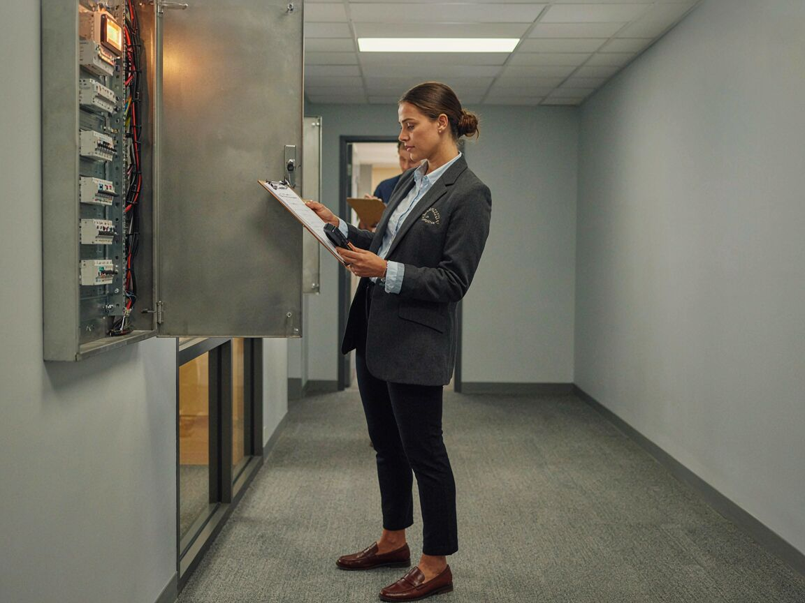
الافتحاص الطاقي لبناية في المغرب: محتواه وإلزاميته
الافتحاص الطاقي يبين أين تذهب طاقة البناية وأي الإجراءات أكثر مردودية. وهو إلزامي في المغرب بالنسبة لبعض المقاولات.
اقرأ المقال ←السلامة من الحريق
كل الموضوع ←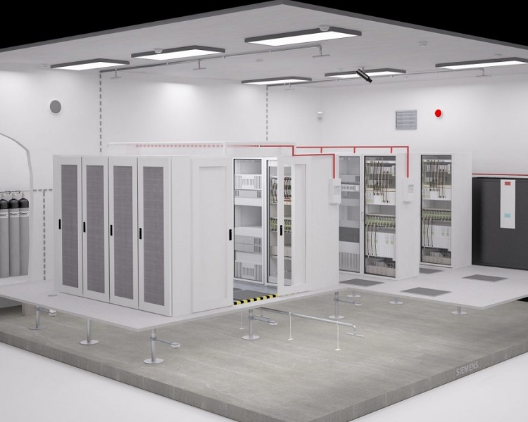
السلامة من الحريق في ERP بالمغرب: ما يفرضه المرسوم 2-14-499
مطعم، مصحة، مدرسة، فندق، محل تجاري: كيف يُطبق النظام المغربي للسلامة من الحريق على مشروعكم، ومتى يجب الاهتمام به.
اقرأ المقال ←
كشف الحريق في فندق أو رياض أو دار ضيافة: الدليل
أشخاص نائمون، غالبا في بناية قديمة ذات أدراج ضيقة: الإيواء السياحي هو الحالة التي ينقذ فيها الكشف المبكر أكبر عدد من الأرواح.
اقرأ المقال ←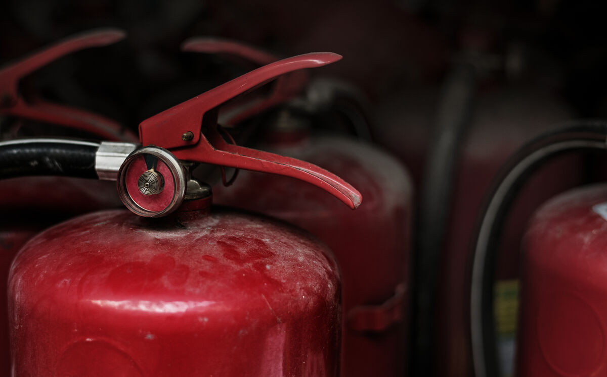
المطافئ: كم يجب تركيبها، وأي نوع يُختار، وأي صيانة
العدد الصحيح، والنوع الصحيح في المكان الصحيح، وفحص كل سنة: قواعد بسيطة لتجهيز منزل أو محل تجاري أو فندق.
اقرأ المقال ←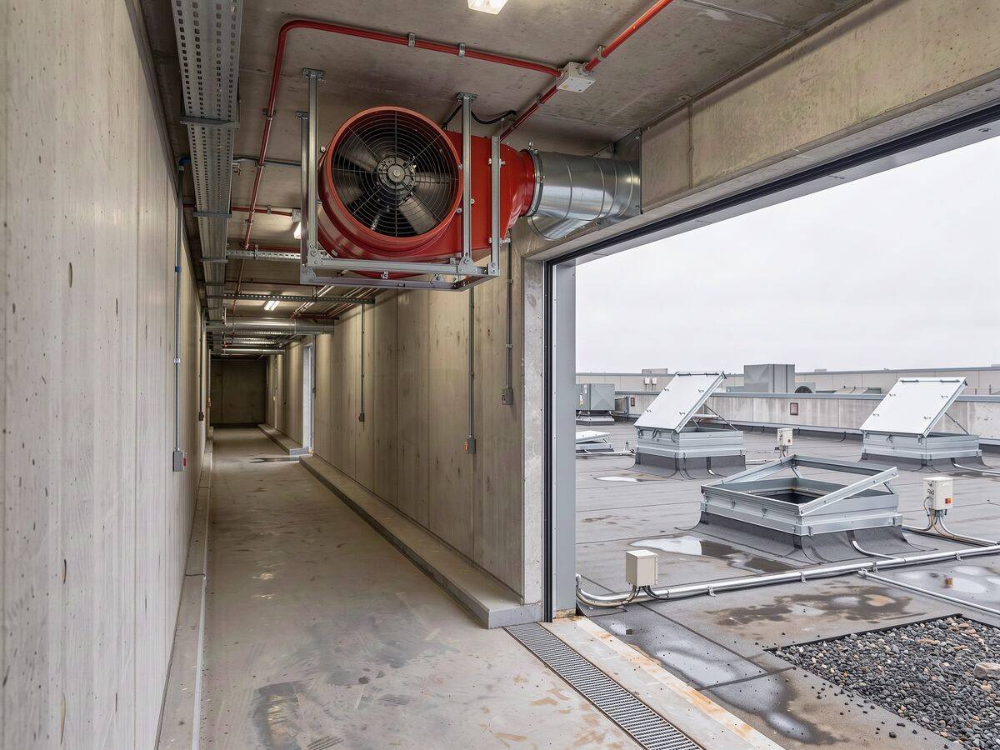
تصريف الدخان الطبيعي أو الميكانيكي: المبدأ والاختيار والصيانة
في الحريق، الدخان هو الذي يقتل أكثر. ويحافظ تصريف الدخان على الأدراج والممرات صالحة للاستعمال طيلة مدة الإخلاء.
اقرأ المقال ←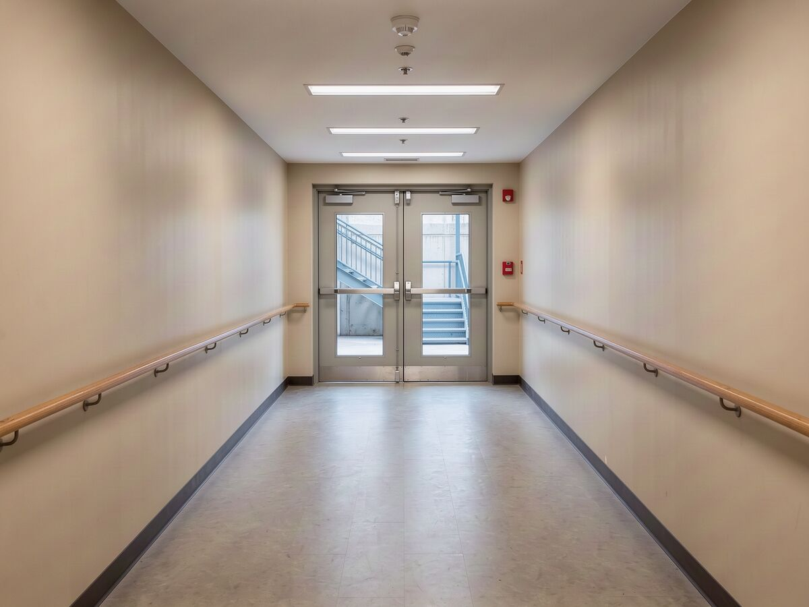
مخارج النجدة وممرات الإخلاء: العدد والعرض ووحدات المرور
كم مخرجا، وبأي عرض، وأين توضع: منطق حساب ممرات الإخلاء لمطعم أو محل تجاري أو فندق.
اقرأ المقال ←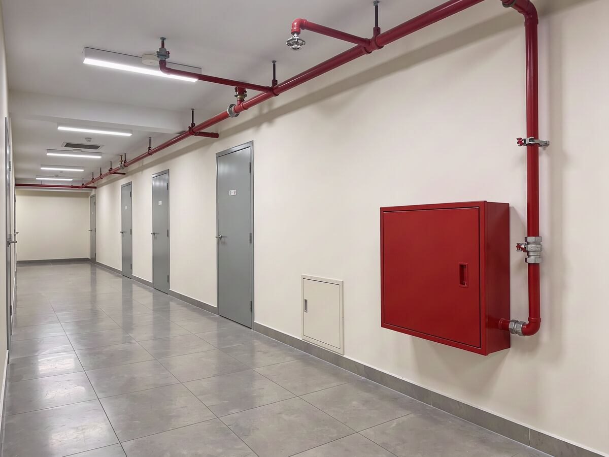
RIA والعمود الجاف والمرشات التلقائية (sprinkler): الفروق والاستعمالات
ثلاثة تجهيزات مائية كثيرا ما يُخلط بينها: الأول للمستخدمين، والثاني لرجال الإطفاء، والثالث يعمل من تلقاء نفسه.
اقرأ المقال ←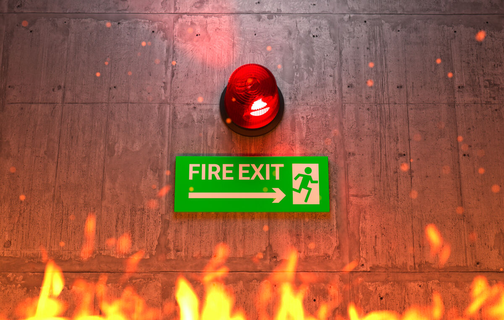
الإنارة الأمنية ووحدات BAES: قواعد التوزيع والصيانة
عندما ينقطع التيار في خضم حريق، تكون وحدات الإغاثة الشيء الوحيد الذي يرشد الشاغلين نحو المخرج. إليكم كيف توزع.
اقرأ المقال ←
نظام السلامة من الحريق (SSI) من الصنف A أو B أو C أو D أو E: فهم النظام
نظام SSI هو عقل السلامة من الحريق في البناية. وصنفه، من A إلى E، يحدد ما يكشفه، وما يشغله، وكيف ينبه.
اقرأ المقال ←الطرق والشبكات (VRD)
كل الموضوع ←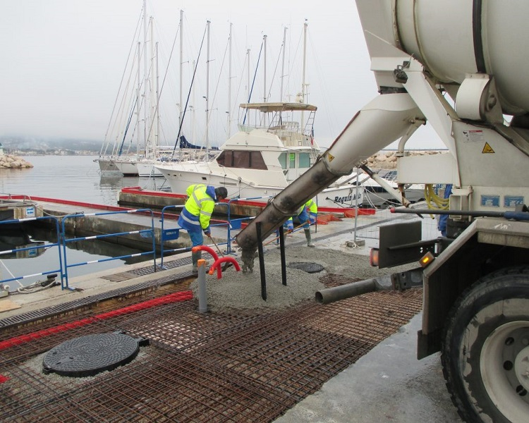
الطرق والشبكات (VRD) لتجزئة عقارية بالمغرب: المراحل من الدراسات إلى التسلم
الطرق، التطهير، الماء، الكهرباء، الإنارة، الاتصالات: الترتيب المنطقي لدراسات وأشغال التجزئة العقارية، وما يتوقف عليه بيع البقع.
اقرأ المقال ←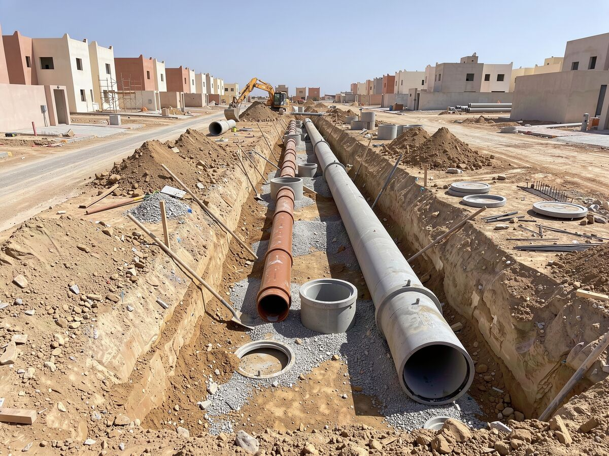
التطهير الموحد أو المنفصل: الفروق وكيفية الاختيار بالمغرب
قناة واحدة لكل شيء أو شبكتان منفصلتان: ما الذي يغيره الاختيار بين التطهير الموحد والمنفصل، سواء لتجزئة عقارية أو لفيلا.
اقرأ المقال ←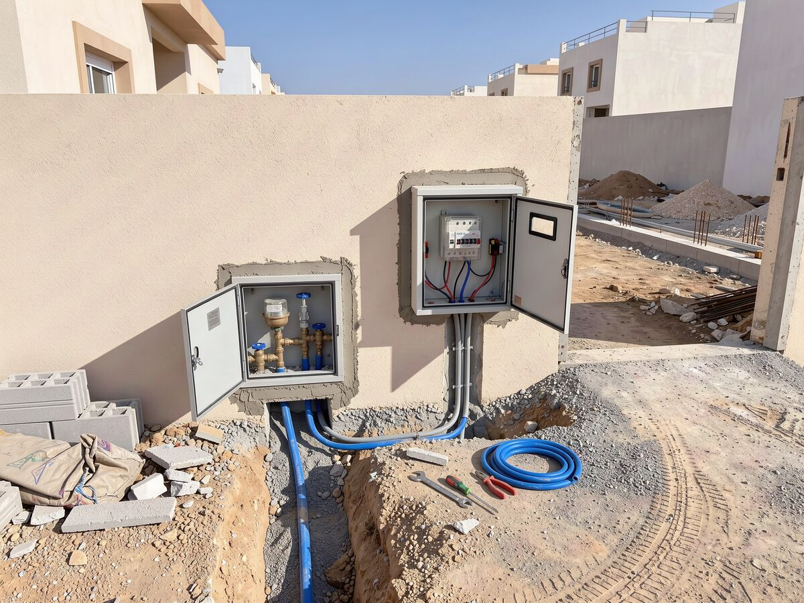
ربط الماء والكهرباء في مراكش: من Radeema إلى الشركة الجهوية SRM
بمن تتصلون، وما الوثائق التي تعدونها، وما الأخطاء التي تتجنبونها للحصول على ربط الماء الصالح للشرب والتطهير والكهرباء لفيلا أو عمارة.
اقرأ المقال ←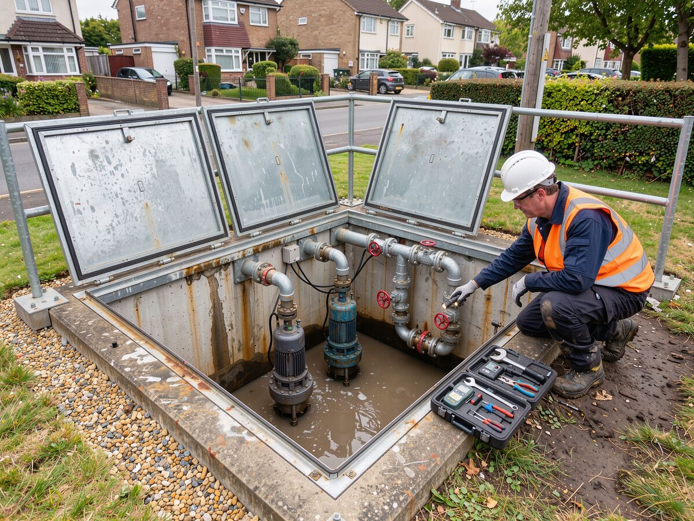
محطة رفع المياه العادمة: متى يجب تركيبها وكيف
عندما تكون قناة الصرف العمومية أعلى من مصارفكم، لا تكفي الجاذبية: إليكم كيف تشتغل محطة الرفع وكيف يتم تصميمها بشكل جيد.
اقرأ المقال ←
بنية قارعة الطريق: الطبقات والسماكات والأخطاء الواجب تجنبها
طريق يتشوه بعد شتاءين فقط يخفي في الغالب عيبا تحت الخرسانة الإسفلتية. إليكم كيف تُبنى قارعة الطريق وما الذي يجب مراقبته.
اقرأ المقال ←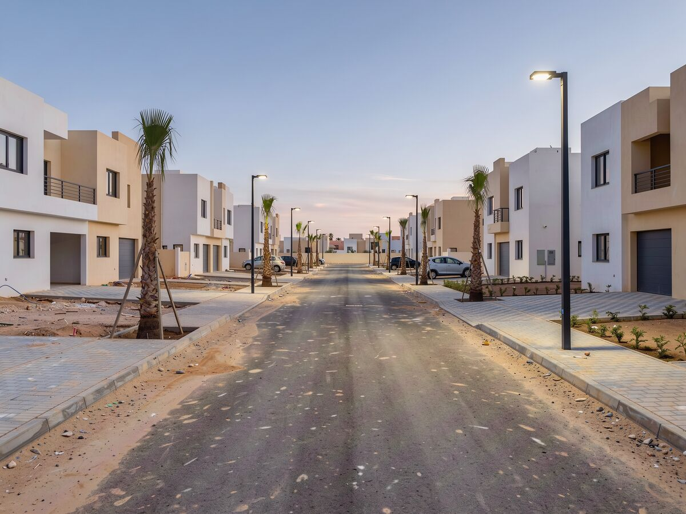
الإنارة العمومية لتجزئة عقارية: المستويات والأعمدة وLED والشبكة
كم لوكس يلزم لشارع سكني، وأي أعمدة إنارة، وكيف تُغذى الشبكة: المراجع لتصميم الإنارة العمومية لتجزئة عقارية.
اقرأ المقال ←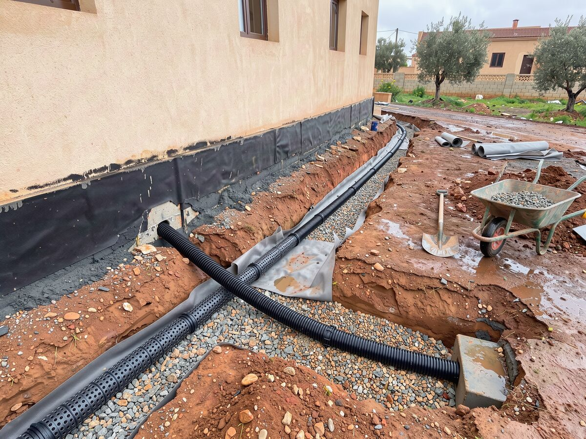
تصريف مياه الأرض ومياه الأمطار: حلول لمنزلكم
في مراكش، تمطر قليلا لكن بغزارة: بضع عواصف تكفي لغمر طابق تحت أرضي أو مسبح. إليكم كيف تُدار مياه الأمطار في قطعة أرضية.
اقرأ المقال ←
الخنادق والشبكات المدفونة: الأعماق والشبكات التحذيرية والمسافات
على أي عمق توضع شبكات الماء والكهرباء والاتصالات والتطهير، وكيف يُشار إليها، وكيف نتجنب أن يصبح الخندق خطيرا.
اقرأ المقال ←الإجراءات والأسعار والأوراش
كل الموضوع ←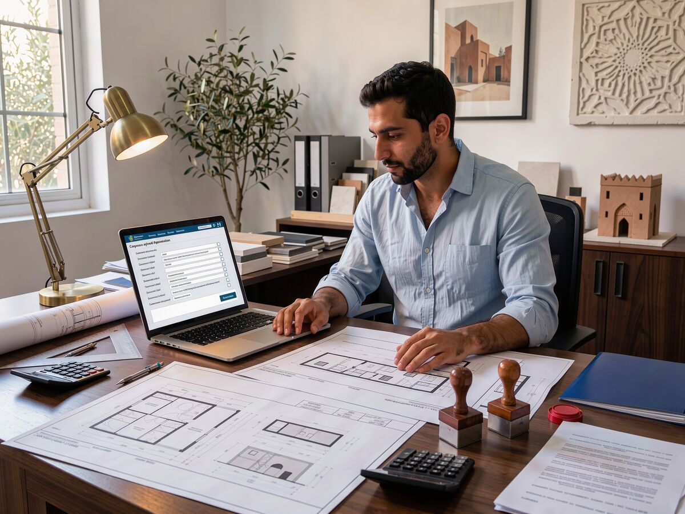
رخصة البناء في المغرب: المراحل وملف منصة Rokhas والآجال
من مذكرة المعلومات إلى تعليق اللوحة في الورش: مراحل رخصة البناء، ووثائق ملف Rokhas، وما يُضيّع أسابيع من الوقت.
اقرأ المقال ←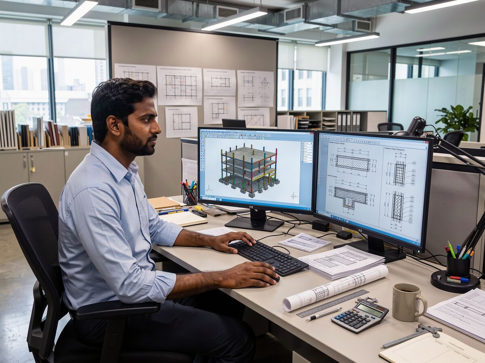
سعر مكتب الدراسات التقنية في المغرب: الأتعاب وعروض الأسعار
نسبة من الأشغال أو مبلغ جزافي، وما الذي يجعل السعر يتغير، وما يجب أن يتضمنه عرض أسعار جاد: كل ما تحتاجه لتقدير ميزانية الدراسات التقنية لمشروعك.
اقرأ المقال ←
سعر البناء للمتر المربع في المغرب سنة 2026: الأشغال الكبرى والتشطيبات
الأشغال الكبرى، التشطيبات، المفتاح في اليد: أسعار المتر المربع المسجلة في المغرب سنة 2026، ومثال مرقّم، والنفقات التي يجب ألا تنساها في ميزانيتك.
اقرأ المقال ←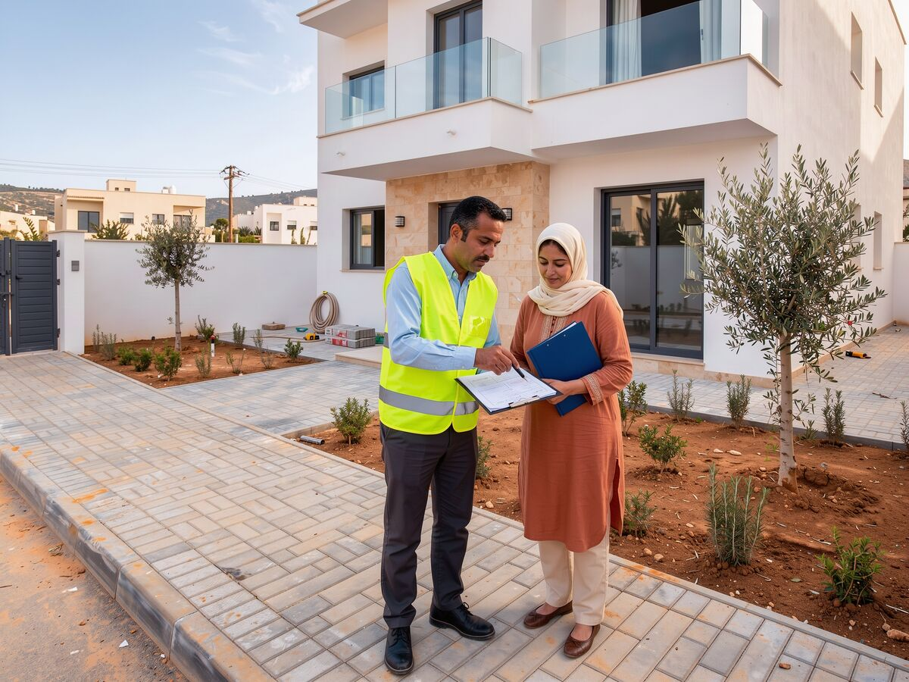
رخصة السكن وشهادة المطابقة في المغرب: المسطرة والخطوات
بدون رخصة السكن، لا يمكن شغل منزل جديد بشكل قانوني، ولا ربطه بالشبكات بشكل نهائي، ولا بيعه بطمأنينة. إليكم كيفية الحصول عليها دون مفاجآت غير سارة.
اقرأ المقال ←مكتب المراقبة في المغرب: دوره ومتى يصبح إلزامياً
مكتب المراقبة لا يصمم البناية: بل يتحقق، لحساب صاحب المشروع وشركة التأمين، من أن التصميم والتنفيذ لا يشكلان أي خطر تقني.
اقرأ المقال ←الضمان العشري في المغرب: الفصل 769 من ق.ل.ع والتأمين RCD
في المغرب، توجد المسؤولية العشرية منذ ظهير الالتزامات والعقود، لكن نطاقها أضيق مما هو عليه في فرنسا. ما الذي تغطيه، ومن تستهدف، وكيف تحمون أنفسكم.
اقرأ المقال ←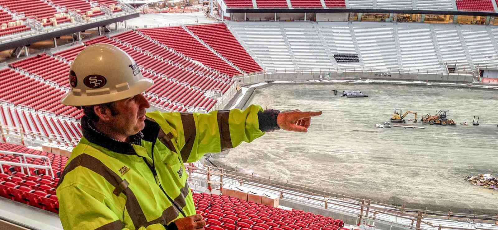
تسلم الأشغال والتحفظات في المغرب: المسطرة خطوة بخطوة
التسلم هو العمل الذي تقبلون بموجبه المنشأة. وما لا تشيرون إليه في ذلك اليوم يصبح من الصعب جداً إلزام المقاولة بإصلاحه لاحقاً.
اقرأ المقال ←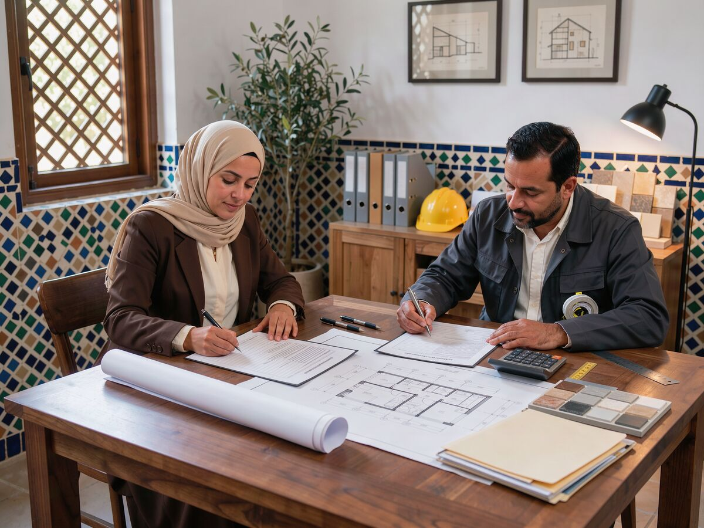
العقد مع مقاولة البناء: البنود الأساسية الواجب اشتراطها
أغلب نزاعات الأوراش تنشأ عن عقد مقتضب جداً. إليكم البنود الواجب اشتراطها قبل أن تعهدوا ببناء منزلكم إلى مقاولة.
اقرأ المقال ←تصاميم المطابقة للمنجز (récolement) وملف المنشآت المنفذة (DOE) في نهاية الورش
بعد خمس سنوات، حين يظهر تسرب تحت الزليج أو ينقطع قاطع كهربائي، سيوفر عليكم هذا الملف أياماً من البحث والكثير من المال.
اقرأ المقال ←
تتبع الورش من طرف مكتب الدراسات: ما هي الزيارات الواجب برمجتها
التصميم المثالي لا فائدة منه إذا لم يحترمه الورش. يتمثل تتبع مكتب الدراسات في الحضور في اللحظات التي يصبح فيها الخطأ غير مرئي.
اقرأ المقال ←أشغال الإصلاح والتجديد في المغرب: هل يلزم ترخيص؟
إعادة تهيئة مطبخ لا علاقة لها بفتح جدار حامل أو إغلاق سطح. ومستوى الترخيص يتوقف على ما تغيره الأشغال.
اقرأ المقال ←دفتر التحملات (CPS) لمشروع بناء: محتواه وفائدته
بدون دفتر تحملات، تقدّر كل مقاولة ثمن بناية مختلفة، ولا يمكنكم لا مقارنة العروض ولا اشتراط الجودة الموعود بها.
اقرأ المقال ←هل المهندس المعماري إلزامي في المغرب؟ القانونان 12-90 و016-89
للبناء في المدينة بالمغرب، المهندس المعماري ليس خياراً. ما يشترطه القانون، والاستثناءات الممكنة، وتوزيع الأدوار مع مكتب الدراسات.
اقرأ المقال ←دار الضيافة في المغرب: المعايير، القانون 80-14 والتصنيف بالنجوم
تحويل رياض إلى دار ضيافة يعني تغيير الاستعمال: تصبح البناية مؤسسة للإيواء السياحي، لها متطلباتها الخاصة في التصنيف والسلامة.
اقرأ المقال ←
نمذجة معلومات البناء (BIM) لمشروع بناء: فوائد ملموسة
BIM ليس مجرد برنامج إضافي للأبعاد الثلاثية: إنه طريقة لتصميم البناية بأكملها في نموذج واحد، لحل المشاكل قبل الورش.
اقرأ المقال ←ما فائدة مكتب الدراسات التقنية في مشروعك؟
المهندس المعماري، مكتب الدراسات، مكتب المراقبة: من يفعل ماذا، ومتى يتدخل مكتب الدراسات، ولماذا يُوفّر غالبًا أكثر مما يكلف.
اقرأ المقال ←سعر بناء فيلا في مراكش سنة 2026
كم يكلف المتر المربع المبني حسب المستوى، وما حصة الأشغال الكبرى، وما يجب إضافته إلى سعر المبنى للحصول على ميزانية واقعية.
اقرأ المقال ←